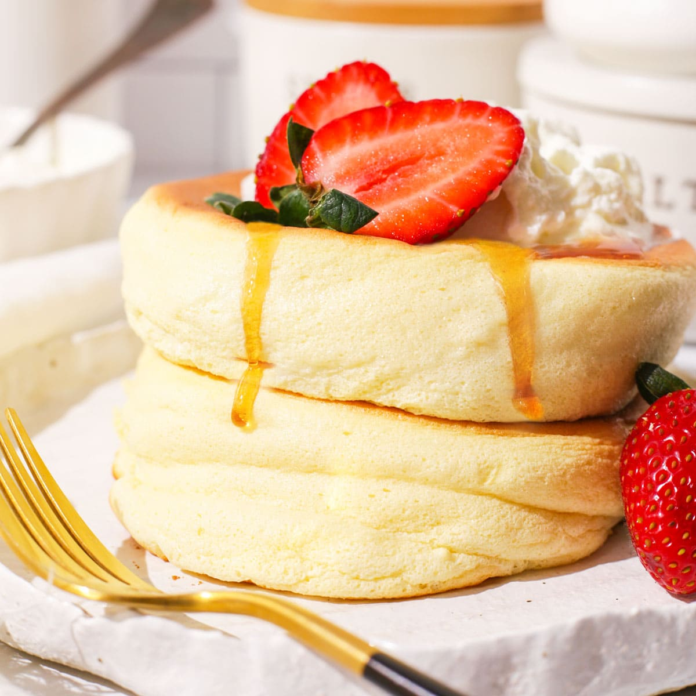

Japanese Fluffy Pancakes Recipe
Ingredients:
- 2 large eggs (separated)
- 2 tablespoons milk
- 1 teaspoon vanilla extract
- 30g (¼ cup) all-purpose flour
- ½ teaspoon baking powder
- 2 tablespoons sugar
- 1 teaspoon lemon juice
- Butter (for cooking)
- Powdered sugar & maple syrup (for serving)
Instructions:
- Separate egg yolks and whites into two bowls.
- Whisk yolks with milk, vanilla, flour, and baking powder until smooth.
- In another bowl, beat egg whites with sugar and lemon juice until stiff peaks form.
- Gently fold the egg whites into the yolk mixture, maintaining the airiness.
- Heat a non-stick pan on low, melt butter, and scoop batter into thick pancakes.
- Cover and cook for 4-5 minutes per side until golden and fluffy.
- Serve dusted with powdered sugar and drizzled with maple syrup.